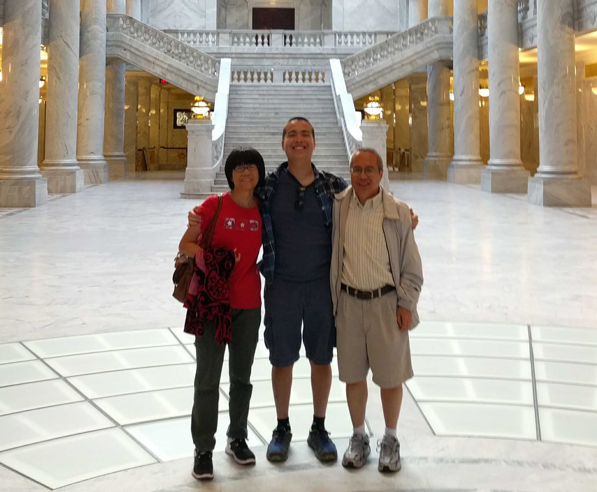

Valedictorian Speech at Graduation
My extensive discussion about life lessons and applicable life lessons comes from your persistent instillment of these values in me.
Watch video
Letting my accomplishments talk for themselves remains the best way to showcase them to friends, coworkers, and strangers. I've learned not to boast about my origami, painting, or writing skills; rather, I let my folded paper models, 32' x 32' canvases, and essays speak on my behalf.
More
Friends come to me for advice about essays, website design, and relationships. At VandyHacks, Music City Code, and Nodevember, I take pride in what I do: placing catering food orders for 450+ attendees, organizing sponsorship fund acquisitions over $10k, and acting as a liason between the organization and Vanderbilt University.
More
Some things in life are worth waiting for. When Citrix took a month to send me news about my interview results; I contemplated sending an email to request an update. However, I remember what you told me once though an ancient Chinese parable about a farmer and his horse who ran away and came back with another horse. Like the farmer, I chose to be neutral about my reaction to the situation; perhaps, good news was just on the horizon.
MoreThe circle of karma is unavoidable. As Jesus himself said in Matthew 7:12, "Do unto others as you would have them do unto you." Professor McCabe had been so generous with my VUSE Summer Research Program application; I decided to thank her with a nice surprise: an upgrade to her 2012 lab website with a new responsive, interactive modern 2017 design.
More
I work to change what I can in the right order: myself, my peers, and then my environment. I can't be in charge of the current U.S. economy, the electoral college in the 2017 election, or the summer internship hiring process. However, I can work on polishing mycomputer-science online portfolio, my VandyHacks involvement position, and, most importantly, my physique.
More
Rainy days happen, so the best we can do is carry a bright yellow umbrella and a big smile. Like the Bank of America financial analyst said, I have Dad's big goofy smile and Mom's wrinkling, twinkling eyes. In turbulent times such as uncompiling, broken code that I've been spending hours fussing over, I still try my best to carry around a wide smile. Because, regardless of how desperate the situation appears, the stormy clouds always clear up and the bright yellow sun always comes out to play.
MoreIn person or in spirit, you've been at all of my keystone moments in my life, from the day I was born, when you got a big celebration lobster, to present day. With the current trend in America's divorce statistics, not many college students get the privilege of being able to say that statement; I thank you for all you've done.
My extensive discussion about life lessons and applicable life lessons comes from your persistent instillment of these values in me.
Watch video
My diligent work in coordinating spending of over $20k towards food comes from your tendency for organization and financial acuity.
View results
My work ethic and research contributions come from your genetic disposition to undergo meticulous research to answer any perplexing question.
See websiteMy calculated interview preparations and email friendliness comes from your usual preference for kindness and thoroughness.
Learn moreBecause of the F✱✱✱ word !!
<<< Hover over the cards >>>

FoodAfter the stress from finals and studying dozens of book chapters, dumplings are always a plus when coming home. Everyone loves some dough stuffed with pork, vegetables, and onions. |

FamilyThough every kind has their little arguments, in-person family remains much better than low-quality, pixelated family over WeChat. Also, hugs are awesome and always welcome. |

FunWith so much studying and club activities at Vanderbilt, not much time remains for competing with friends in ping-pong or folding origami decorations. At home, these extracurriculars abound. |